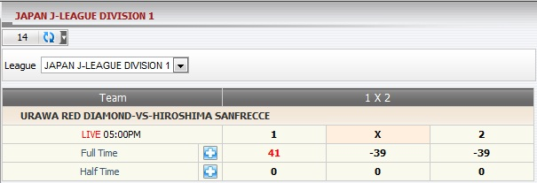

Master's win/loss forecast on each match for bettype 1x2 (figure 1.1)

In this example, member placed a bet on Match URAWA RED DIAMOND -vs- HIROSHIMA SANFRECCE, stake = 130, odds = 2.06, master PT = 30%, bettype = 1x2, member choice: FT.1 means Home team (URAWA RED DIAMOND) will win after Full Time.